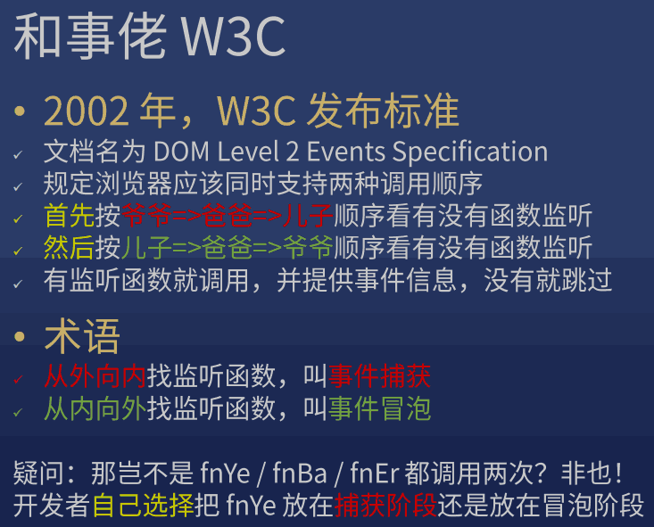

方方-DOM 事件与事件委托
JS 编程接口
点击事件
addEventListener
<body>
<div class="level1 x">
<div class="level2 x">
<div class="level3 x">
<div class="level4 x">
<div class="level5 x">
<div class="level6 x">
<div class="level7 x">
</div>
</div>
</div>
</div>
</div>
</div>
</div>
</body>
* {
box-sizing: border-box;
}
div[class^=level] {
border: 1px solid;
border-radius: 50%;
display: inline-flex;
}
.level1 {
padding: 10px;
background: purple;
}
.level2 {
padding: 10px;
background: blue;
}
.level3 {
padding: 10px;
background: cyan;
}
.level4 {
padding: 10px;
background: green;
}
.level5 {
padding: 10px;
background: yellow;
}
.level6 {
padding: 10px;
background: orange;
}
.level7 {
width: 50px;
height: 50px;
border: 1px solid;
background: red;
border-radius: 50%;
}
.x{
background: transparent;
}
const level1 = document.querySelector('.level1')
const level2 = document.querySelector('.level2')
const level3 = document.querySelector('.level3')
const level4 = document.querySelector('.level4')
const level5 = document.querySelector('.level5')
const level6 = document.querySelector('.level6')
const level7 = document.querySelector('.level7')
let n = 1
level1.addEventListener('click', (e)=>{
const t = e.currentTarget
setTimeout(()=>{
t.classList.remove('x')
},n*1000)
n+=1
})
level2.addEventListener('click', (e)=>{
const t = e.currentTarget
setTimeout(()=>{
t.classList.remove('x')
},n*1000)
n+=1
})
level3.addEventListener('click', (e)=>{
const t = e.currentTarget
setTimeout(()=>{
t.classList.remove('x')
},n*1000)
n+=1
})
level4.addEventListener('click', (e)=>{
const t = e.currentTarget
setTimeout(()=>{
t.classList.remove('x')
},n*1000)
n+=1
})
level5.addEventListener('click', (e)=>{
const t = e.currentTarget
setTimeout(()=>{
t.classList.remove('x')
},n*1000)
n+=1
})
level6.addEventListener('click', (e)=>{
const t = e.currentTarget
setTimeout(()=>{
t.classList.remove('x')
},n*1000)
n+=1
})
level7.addEventListener('click', (e)=>{
const t = e.currentTarget
setTimeout(()=>{
t.classList.remove('x')
},n*1000)
n+=1
})

target vs currentTarget
区别
- e.target: 用户操作的元素
- e.currentTarget: 开发者监听的元素，this 是 e.currentTarget，我个人不推荐使用它
捕获，冒泡



一个特例
只有一个 div 被监听（不考虑父子同时被监听），fn 分别在 捕获阶段 和 冒泡阶段 监听 click 事件
答案：谁先监听谁先执行
取消冒泡
捕获不可取消，但冒泡可以
一般用于封装某些独立的组件
e.stopPropagation()
有些事件不可取消冒泡
google: scroll event mdn
如何阻止滚动
scroll 事件不可取消冒泡
- 阻止 scroll 默认动作没用，因先有滚动才有滚动事件
- 要阻止滚动，可阻止 wheel 和 touchstart 的默认动作
-
使用 overflow: hidden 可以直接取消滚动条，但此时 JS 依然可以修改 scrollTop
例子
<body>
<div id=x>
<p>1</p>
<p>2</p>
<p>3</p>
<p>4</p>
<p>5</p>
...
<p>99</p>
<p>100</p>
</div>
</body>
::-webkit-scrollbar { width: 0 !important }
x.addEventListener('wheel', (e)=>{
console.log(2)
e.preventDefault()
})
x.addEventListener('touchstart', (e)=>{
console.log(2)
e.preventDefault()
})
浏览器自带事件，一共 100 多种事件
自定义事件
<!DOCTYPE html>
<html>
<head>
<meta charset="utf-8">
<title>JS Bin</title>
</head>
<body>
<div id=div1>
<button id=button1>点击触发 frank 事件
</button>
</div>
</body>
</html>
button1.addEventListener('click', () => {
const event = new CustomEvent("frank", {
"detail": {
name: 'frank',
age: 18
},
bubbles: true,
cancelable: false
})
button1.dispatchEvent(event)
})
button1.addEventListener('frank', (e) => {
console.log('frank')
console.log(e)
})
事件委托
就是把事件监听放在祖先元素（如父元素、爷爷元素）上
-
优点
- 省监听数（内存）
- 可以监听动态生成的元素
给 100 个 按钮添加点击事件
监听这 100 个按钮的祖先，等冒泡的时候判断 target 是不是这 100 个按钮中的一个
<body>
<div id=div1>
<span>span1</span>
<button data-id="1">click 1</button>
<button data-id="2">click 2</button>
<button>click 3</button>
<button>click 4</button>
<button>click 5</button>
...
<button>click 99</button>
<button>click 100</button>
</div>
</body>
div1.addEventListener('click', (e) => {
const t = e.target
if (t.tagName.toLowerCase() === 'button') {
console.log('button 被点击了')
console.log('button data-id 是' + t.dataset.id)
console.log('button 的内容是' + t.innerText)
}
})
要监听目前不存在的元素的点击事件
监听祖先，等点击的时候看看是不是我想要监听的元素
<!DOCTYPE html>
<html>
<head>
<meta charset="utf-8">
<title>JS Bin</title>
</head>
<body>
<div id=div1>
</div>
</body>
</html>
setTimeout(() => {
const button = document.createElement('button')
button.textContent = 'click 1'
div1.appendChild(button)
}, 1000)
/* 封装事件委托
* 当用户点击 #div1 里的 button 元素时，调用 fn 函数
* 答案1：判断 target 是否匹配 'button'
* 答案2：[递归判断](https://github.com/FrankFang/wheels/blob/master/lib/dom/index.js#L2) target / target 的爸爸 / target 的爷爷
* 整合进 jQuery，有兴趣可以自己实现 $('#xxx').on('click', 'li', fn)
*/
on('click', '#div1', 'button', () => {
console.log('button 被点击了')
})
function on(eventType, element, selector, fn) {
if (!(element instanceof Element)) {
element = document.querySelector(element)
}
element.addEventListener(eventType, (e) => {
const t = e.target
if (t.matches(selector)) {
fn(e)
}
})
}
JS 支持事件吗
支持，也不支持。本节课讲的 DOM 事件不属于 JS 的功能，属于浏览器提供的 DOM 的功能
JS 只是调用了 DOM 提供的 addEventListener 而已
手写一个事件系统，让 JS 支持事件，目前没能力